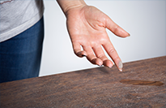

“Một số triệu chứng khác: dày sừng ở bàn tay, bàn chân, da vảy cá, dày sừng nang lông, vảy phấn trắng.”
Viêm Da Cơ Địa (VDCĐ) là bệnh gì?
1
Còn gọi là chàm cơ địa, chàm thể tạng.
2
Là bệnh da mãn tính xen kẽ với những giai đoạn bùng phát và rất dễ tái phát. Bệnh khó điều trị dứt hẳn nhưng có thể phòng ngừa. Khoảng 50% trẻ em viêm da cơ địa vẫn còn bệnh khi đã trưởng thành.
3
Phổ biến ở trẻ em, chiếm 26.6% trẻ nhũ nhi và 16% ở trẻ dưới 5 tuổi.
Biểu Hiện Lâm Sàng
“Biểu hiện lâm sàng đặc trưng: ngứa, đỏ da, mụn nước tập trung thành từng đám, phù nề, dày da, vảy tiết.”
“Ngứa có thể xảy ra đột ngột hay thành từng cơn (trẻ nhũ nhi) hay ngứa liên tục (trẻ lớn và người lớn). Trẻ phải chà xát lên giường, nệm hay các đồ vật khác vì ngứa.”
“Bệnh ảnh hưởng đến sinh hoạt của người bệnh, gây mất ngủ nhiều giờ mỗi ngày, làm giảm chất lượng cuộc sống.”
Tại sao lại bị Viêm Da Cơ Địa
Nguyên nhân chính
Yếu tố di truyền: trẻ có nguy cơ cao mắc bệnh viêm da cơ địa khi gia đình có cha hoặc mẹ hoặc cả cha lẫn mẹ bị viêm da cơ địa, hen suyễn, hay viêm mũi dị ứng. Một số trẻ có yếu tố di truyền bị mắc cả ba bệnh nói trên.
60% người lớn bị viêm da cơ địa có con bị bệnh này, nếu cả bố và mẹ cùng bị bệnh thì con dẻ ra có đến 80% cũng bị bệnh. Ở trẻ bị viêm da cơ địa nặng, > 50% tiến triển đến hen suyễn, khoảng 75% pht triển viêm mũi dị ứng.
Rối loạn miễn dịch
Những yếu tố khởi động hoặc làm bệnh nặng hơn
Môi trường sống: sinh sống ở những thành phố (nhất là nơi có mức độ ô nhiễm môi trường cao) hay vùng khí hậu lạnh làm tăng nguy cơ viêm da cơ địa. Những yếu tố khác làm tiến triển viêm da cơ địa như thay đổi khí hậu đột ngột, nhiệt độ nóng và sự đổ mồ hôi, dung xà phòng có chất tẩy rửa, thú nuôi, thảm, đồ chơi nhiễm khuẩn, mặc quần áo bằng chất liệu nilon, sợi tổng hợp acrylic, áo len hay vải sợi thô, nước hoa và các sản phẩm chăm sóc cá nhân có mùi thơm, máy lạnh, thuốc lá, bụi nhà ,bụi đường…
Thức ăn: trẻ em viêm da cơ địa thường dị ứng với một số loại thức ăn như sữa bò và các sản phẩm từ sữa (ví dụ: sữa chua, pho mát), lạc (đậu phộng), quả hạch, sò, hải sản, thịt bò, thịt gà…Trước khi cho trẻ ngừng bất cứ loại thức ăn nào, người nhà nên thảo luận với bác sĩ da liễu và bác sĩ nhi khoa. Trẻ em cần được cung cấp đủ chất dinh dưỡng để tăng trưởng và phát triển bình thường.

Xà phòng, chất tẩ
Xà phòng, chất tẩ
Xà phòng, chất tẩ
Xà phòng, chất tẩ
Xà phòng, chất tẩ
Xà phòng, chất tẩ
Xà phòng, chất tẩ

Xà phòng, chất tẩ

Xà phòng, chất tẩ
Phân biệt Viêm Da Cơ Địa ở trẻ nhũ nhi, trẻ lớn và người lớn thế nào?
Trẻ nhũ nhi (từ sơ sinh đến 2 tuổi)
Vị trí tổn thương hay gặp nhất là hai bên má, ngoài ra còn thấy ở đầu, trán, cổ, mặt, thân mình, mặt duỗi các chi. Khi trẻ biết bò có thể thấy xuất hiện tổn thương ở đầu gối. Tổn thương cơ bản là mụn nước tập trung thành từng đám, dập vỡ và rỉ dịch khi bị viêm cấp hay nhiễm trùng.
Trẻ em (2 tuổi cho đến dậy thì)
Vị trí tổn thương bắt đầu ở khoeo, nếp gấp khuỷu tay, cẳng tay, mặt gấp của cổ tay, cổ chân hay đầu gối. Những vị trí khác cũng hay gặp là hai bên cổ, mi mắt, mắt cá, hay nếp gấp giữa mông và đùi. Tổn thương là những sần đỏ dẹt, có vảy mỏng trên da dày. Theo thời gian, da trở nên thô ráp, trắng ra (hay sạm đi), da dày lên do cào gãi nhiều (bác sĩ gọi là hiện tượng “lichen hóa”).
Trẻ vị thành niên và người lớn
Tổn thương cơ bản ở nấp gấp khuỷu tay hay đầu gối và gáy, diện tích thương tổn lan rộng trên cơ thể, thể hiện rõ ở cổ và mặt, gây ảnh hưởng xáu đến da vùng quanh mắt. Da khô, tróc vảy và dày. Tổn thương sẽ trở nên dày và sậm màu hơn các vùng da còn lại, gây ngứa liênc ục nếu bị viêm da cơ địa trong khoảng vài năm. Các biểu hiện khác: khô da, vảy cá, dày da long bàn tay, bàn chân, dày sừng nang long, long mi thưa, viêm môi bong vảy, mi mắt dưới có thể có hai nếp gấp, tăng sắc tố quanh mắt, viêm kết mạc tái diễn có thể gây lộn mi, có thể có đục thủy tinh thể, chứng da vẽ nổi trắng.
Tài liệu tham khảo: Hội Da Liễu & Hội Nhi Khoa Việt Nam, Những điều cần biết về Viêm da cơ địa – NXB Y Học 2016